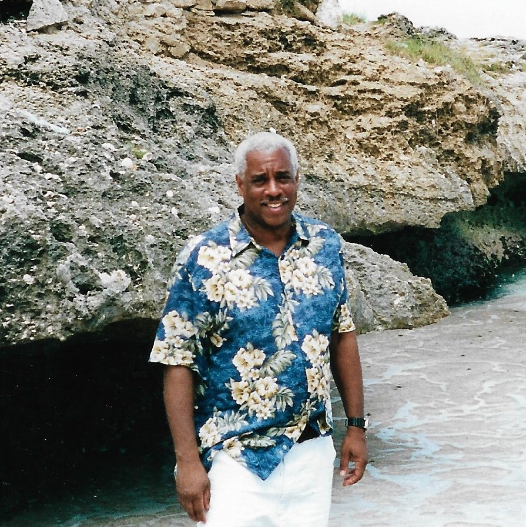

Byron Lewis
December 11, 1951 to January 7, 2017
Born to Henry Lewis and Hattie Lewis on December 11, 1951, and raised in North Philadelphia, Byron attended Reynolds Elementary school, Vaux Junior High and, Central High School, The Pennsylvania State University and Cheney University. A retired social worker, Byron loved helping others. He was a sixth degree black belt in Shotokan Karate and enjoyed teaching the Martial Arts. He cherished his Jazz and Blues collection and ever faithful pets Jade, Missy, and Miles. He leaves behind his wife Mary, daughter Jessica, and three grandchildren Kyla, Logan, and Rae, as well as a host of family members and friends.
- I sing because I'm happy (happy)
- I sing because I'm free (free free free)
- For his eye, his eye on the sparrow,
- And I know, I know He watches over me.
Sorrowfully,
The family of Byron Lewis